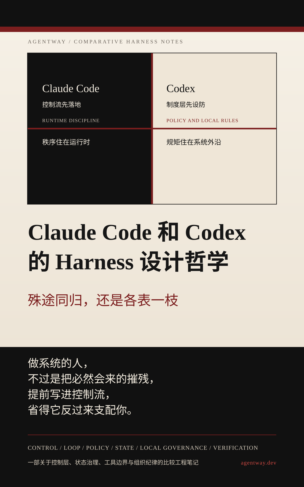

导读

“人活在世上，就是为了忍受摧残。”
做 harness 也是。区别只在于，有人把摧残写进控制流，有人把摧残写进制度层。
这不是一份功能表，也不是一篇产品评测。它要比较的是两套系统如何承认模型不可靠，并把这种不可靠驯化成可持续工作的工程秩序，而不只是看“谁支持更多工具”。
本书有三个判断前提：
- Claude Code 和 Codex 比较的重点不在模型，而在 harness
- harness 是一种权力分配方式，而不是若干功能的拼盘
- 工程系统的差别，常常不在名词，而在秩序住在哪一层
如果你第一次进入这套比较，建议这样读：
- 先读序言，确认比较对象不是模型，而是 harness 的秩序设计。
- 再读第 1 到第 6 章，顺着控制面、连续性、工具治理、本地制度和多代理验证五条比较轴往下走。
- 然后读第 7 章 殊途同归，还是各表一枝，把前面的比较收束成总判断。
- 最后读第 8 章 如果你要自己做：该向谁学，先学什么，把比较转成可执行的路径选择。
如果只想先看总判断，可以直接跳到第 7 章。